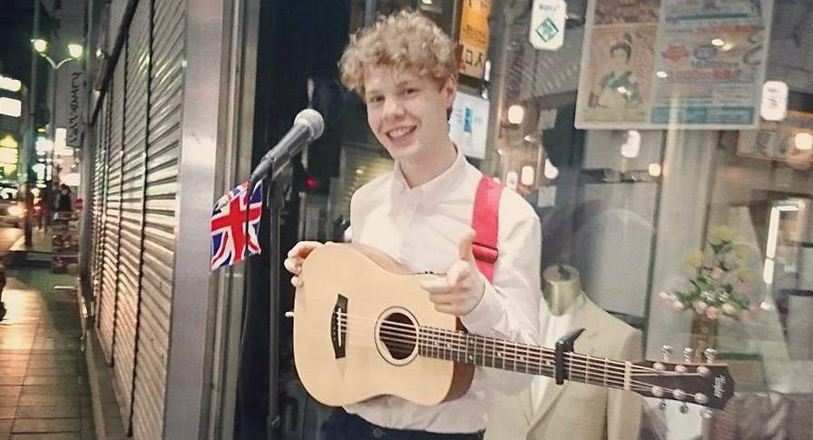

A section in which Hydr and the Yees post their thoughts and feelings on life.
 ~ Hello, I'm writing to you from the comfy reserved seat of a long distance Shinkansen, (that's a high speed train.) from Osaka - To Fukuoka. I have about five days left in Asia before heading back to London. Why leave Osaka for Fukuoka is the question anyone that knows anything about Japan will ask. Truth be told, I was constantly up and down the south and midland part of Japan the whole time I was here, trying to perform every night. While not always consistently well received, the street performances have at times gone down extremely well. Notable places would be Kagoshima, Fukuoka and Hiroshima. My time here has been short, but I feel as though, I have managed to break through some of the cultural and language barriers I've experienced, by simply being out there and performing for people and bringing some new music to the ears of the citizens here. It's been a lot of fun and a lot of stress too. I feel mentally inspired, but after many typical travel setbacks, (my overpriced and heavy suitcases wheel falling off, losing my plug adaptor and a few other issues,) I am being to feel the burn and have tired out a bit. Tomorrow I am going on a regional radio in Fukuoka and have to speak about Hydr and the Yees in detail using the Japanese language. Japanese is a language that I hold a very basic travel grasp of but have no major strength of past that. Two days ago I met with a TV producer and her associates in Fukuoka after she spotted me performing outside tenjin station, and invited me on a radio show there. The meeting was very interesting. On one end I had her and her associates speaking Japanese and a tiny bit of English to me, and then on the other end myself replying with English and tiny bits of Japanese when I could. Amazingly we managed to understand each other, even though a lot of the meanings were definitely lost. Body language also came to the rescue, but I never realised until now just how useless an online translator engine could be. I was very lucky to have my Japanese friend translate for me via Facebook chat too. Tonight I'll perform again in Fukuoka and prepare for tomorrow's radio show. I have been so fortunate to meet another person in Fukuoka who agreed to come along and help me translate during the show. This trip has definitely been very heavy with contrast. There have been times where I felt as if I found a place to settle down for the rest of my life, and other times where I have felt I was given a small grasp of what the business workers of the country go through every day and why it is so stressful to live here - The pressure of always being positive in a business environment when things are going badly is a major strain on someone more publicly expressive like myself. The other night I went to buy a bottle of water in a convenience store. The owner had his back to me as I approached the cash register. I had to wait maybe one or two seconds before he turned and saw me there. It seemed as if he was horror-struck with guilt for making me wait because the speed at which he served me after these heinous two seconds was something I didn't think humanity was possible of. after giving me my water in a bag in lighting quick speed, he bowed low to me about three or four times, like I was his divine saviour from above. It's definitely a cultural thing, but my western narrow-minded side still allowed myself to feel bad for him. I know, this being my third time here, that it was nothing to him. While being away, I have also managed to learn a few more useful things about myself and what I am capable of. Traveling can produce that affect on a lot of people. I am for the first time in a very long time restless to get back to recording the next few songs that will come out in the coming months. It's been a great feeling having the first track off the album produced and ready for release, while I am out here. I'm looking forward to taking a few days to rest when I get back to London, and in that time doing some of the logistical legwork for the Europe tour that starts at the end of September. In the coming weeks we are going to produce more info on the band and introduce the members a little better through the website. This will Include blogs written by other members too. I think it is vital that you get to know these fantastic talented boys that I hang out with/rehearse with and really miss. Kind regards from Japan, and love from the satellite, Richard